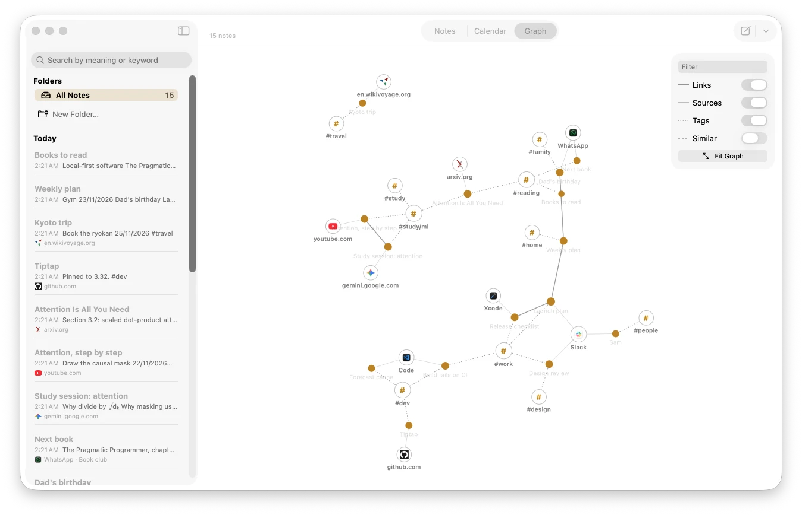

Your notes wait where you left them
Write a note in a Slack channel, a file in VS Code or on a web page. Next time you're back there, NoteAnywhere has it open in a small panel beside your work.
Free and open source. macOS 15 or later, Apple silicon and Intel.
# design-review
New color tokens are in the file.
Can we check dark mode before Friday?
Sidebar grouping looks great.
import { getForecast } from "./forecast"; // Fetch once, then reuse. const CACHE_MS = 10 * 60 * 1000; export async function load(city: string) { const hit = cache.get(city); if (hit && Date.now() - hit.at < CACHE_MS) return hit.data; const data = await getForecast(city); cache.set(city, { data, at: Date.now() }); return data; }
ueberdosis / tiptap
A note belongs to the place it's about
NoteAnywhere knows which chat, file or page is in front of you. Notes you write there come back when you do, and stay out of the way everywhere else.
Slack › Acme › Sam
What to ask Sam next time, right in your DM with Sam.
VS Code › weather-app › index.ts
Why the cache is ten minutes, next to the code that sets it.
github.com /ueberdosis/tiptap
Which version you pinned, on the project's page, in Chrome or Brave.
WhatsApp › Family
Gift ideas for the next birthday, in the family group.
A broader place sees the notes under it: Acme shows every channel's notes, github.com every repo's. Press ⌥⇧M to show or hide the panel anywhere.
And every note in one place
An Apple Notes–style window holds them all, with a real Markdown editor: checklists, tables, code and links between notes.


Search by meaning
⌥⇧Space from anywhere. Search “invoice” and find the note about billing, with a model that runs on your Mac.
Writing help on device
Fix grammar, make a note shorter or turn it into a checklist with Apple Intelligence on macOS 26.
Your notes in Claude
Claude, Codex and Gemini can read and add to your notes through the built-in MCP server. Nothing can be deleted that way.
On your iPhone too
Optional sync keeps the Mac and iPhone apps in step, end-to-end encrypted with a passphrase only you know.
Live between app and browser
Edit a page's note in the Mac app and the open tab updates, and the other way round.
Locked notes
Lock a note with a password. It's encrypted on disk and kept out of search.
Set up in a minute
Install the app
Open the DMG and drag NoteAnywhere to Applications. A note icon appears in the menu bar.
Allow Accessibility
It lets notes follow one channel, file or chat by reading window titles. Without it, notes follow the whole app.
Add the extension
For notes on web pages, add it to Chrome or Brave. It finds the app by itself.
Your notes stay on your Mac
No account needed, no tracking. The code is on GitHub under GPL-3.0, so you can check every line.
- Stored locally. Notes live in a database in your Library folder.
- The extension talks only to the app. It sends the address and title of the tab you're on to NoteAnywhere on the same Mac, and reads nothing else from the page.
- Search and writing help run on the Mac. Search downloads an open model (about 90 MB) once.
- Sync is off unless you turn it on. When it's on, notes are encrypted on your device before they're sent, so the sync service can't read them.
Leave a note anywhere
Free. macOS 15 or later, Apple silicon and Intel.